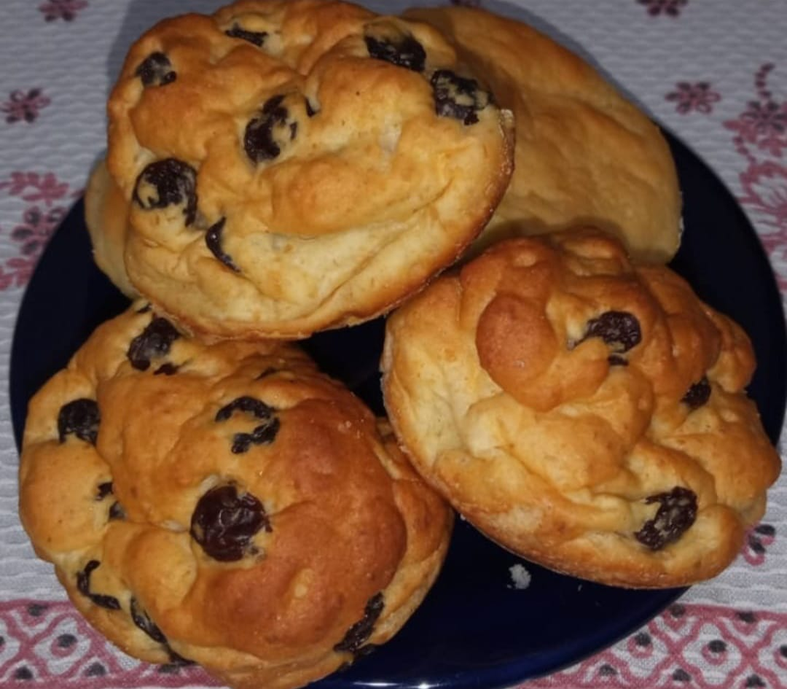

Adriana Pimentel, Confeitaria Funcional!
Pão de Uvas Passas

1 unidade de 300g, por apenas:
R$ 25,00
Do que são constituídos?
TODOS OS INGREDIENTES
Água de uva passa
Uvas Passas
Farinha de arroz
Amido de milho
Farinha de grão de bico
Fécula de mandioca
Açúca demerara
Óleo de milho
Linhaça dourada
Fermento biológico seco
Goma xantana
Sal marinho ou rosa